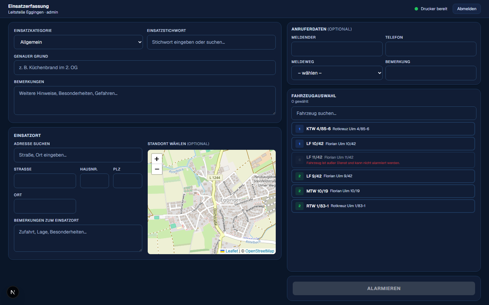
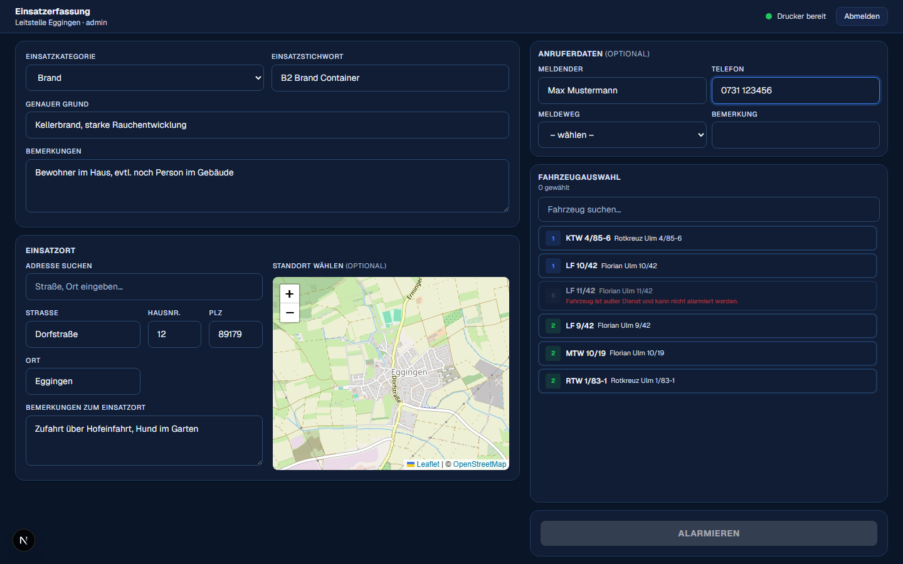
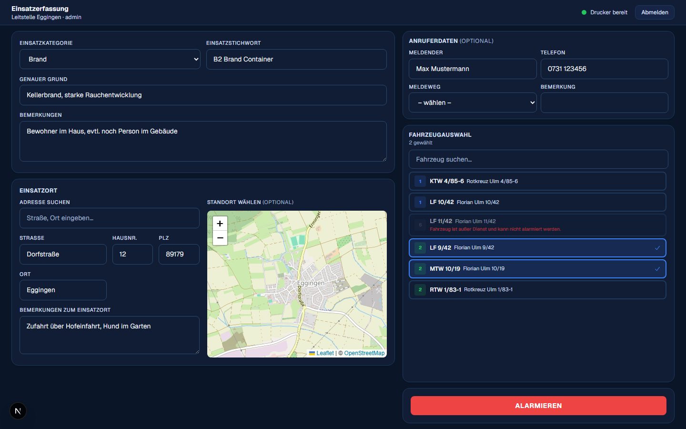

Einsatz erfassen & alarmieren
Die Einsatzerfassung (Monitor 2, „Notrufabfrage“) ist der Ort, an dem aus einem simulierten Notruf ein Übungsalarm wird. Diese Seite geht Feld für Feld durch.
Einen Einsatz anlegen können nur Disponent und Admin. Details siehe Rollen & Rechte.

Schritt für Schritt
-
Einsatzkategorie & Stichwort wählen
Wähle zunächst die grobe Einsatzkategorie (Brand, Hilfeleistung, Rettung, Sonstiges oder Allgemein). Tippe dann im Feld „Einsatzstichwort“ – die passenden, vorkonfigurierten Stichworte werden vorgeschlagen. Findest du kein passendes Stichwort, kannst du auch frei Text eingeben.
-
Genauer Grund & Bemerkungen
„Genauer Grund“ ist eine kurze Freitext-Beschreibung (z. B. „Küchenbrand im 2. OG“). Unter „Bemerkungen“ kannst du weitere Hinweise, Besonderheiten oder Gefahren notieren – dieser Text erscheint später auf dem Alarmdruck und im Einsatzbericht.
-
Einsatzort erfassen
Über „Adresse suchen“ kannst du eine Adresse per Karten-Suche finden – die Felder Straße, Hausnummer, PLZ und Ort füllen sich dann automatisch, und die Karte zeigt den Punkt. Du kannst die Adresse aber auch direkt manuell in die einzelnen Felder eintragen. Im Feld „Bemerkungen zum Einsatzort“ trägst du Zufahrt, Lage oder Besonderheiten ein (z. B. „Zufahrt über Hofeinfahrt, Hund im Garten“) – dieser Hinweis taucht danach überall dort auf, wo der Einsatz angezeigt wird.
-
Anruferdaten (optional)
Meldender, Telefonnummer, Meldeweg (z. B. Telefon 112, Funk, persönlich) und eine Bemerkung zum Anrufer kannst du optional erfassen.
-
Fahrzeuge auswählen
Rechts wählst du per Klick die Fahrzeuge aus, die alarmiert werden sollen. Fahrzeuge, die außer Dienst sind oder bereits einem anderen laufenden Einsatz zugeteilt sind, werden ausgegraut und lassen sich nicht auswählen – mehr dazu unter Fahrzeuge & Status.
-
Alarmieren
Ein Klick auf „Alarmieren“ legt den Einsatz an, vergibt eine Einsatznummer, benachrichtigt alle angemeldeten Monitore in Echtzeit, löst – falls konfiguriert – den automatischen Alarmdruck aus und schickt eine Push-Benachrichtigung.


Der Alarmdruck
Direkt nach dem Klick auf „Alarmieren“ wird die Alarmdepesche automatisch an die lokal laufende Silent-Print-App geschickt und ohne Druckdialog ausgedruckt – vorausgesetzt, die App läuft auf dem PC und ist in den Einstellungen korrekt verbunden (Statusanzeige oben rechts: „Drucker bereit“). Wie viele Kopien gedruckt werden, hängt vom eingestellten Druckmodus ab (1× pro Einsatz, pro Fahrzeug oder eine feste Anzahl).
Ist die App nicht erreichbar, wird still kein Alarmdruck erzeugt – es erscheint keine Fehlermeldung. Prüfe im Zweifel die Statusanzeige oben rechts oder nutze den Testdruck in den Einstellungen. Wie die App installiert wird, steht unter Alarmdruck einrichten.
Beispiel einer Alarmdepesche
So sieht ein ausgedruckter Alarmdruck aus – kurz und auf das Wesentliche reduziert:
- Einsatz-Nr.
- 20260823-001
- Meldebild
- B2 Brand Container
- Fahrzeuge
- Florian Ulm 9/42, Florian Ulm 10/19
- Stichwort
- Brand – Kellerbrand, starke Rauchentwicklung
- Adresse
- Dorfstraße 12, 89179 Eggingen
- Ortshinweis
- Zufahrt über Hofeinfahrt, Hund im Garten
- Meldender
- Max Mustermann
- Bemerkungen
- Bewohner im Haus, evtl. noch Person im Gebäude
| EM | alarmiert | Wache ab | EOrt an | ZOrt ab | Ende |
|---|---|---|---|---|---|
| Florian Ulm 9/42 | 19:17:57 | – | – | – | – |
| Florian Ulm 10/19 | 19:17:57 | – | – | – | – |
Was passiert danach?
Der Einsatz erscheint sofort auf dem Dashboard unter „Laufende Einsätze“ und auf dem Alarmmonitor im Gerätehaus. Von dort – oder direkt wieder aus der Einsatzerfassung – kannst du später weitere Fahrzeuge nachalarmieren und irgendwann den Einsatzbericht schreiben: siehe Bericht & Einsatz abschließen.